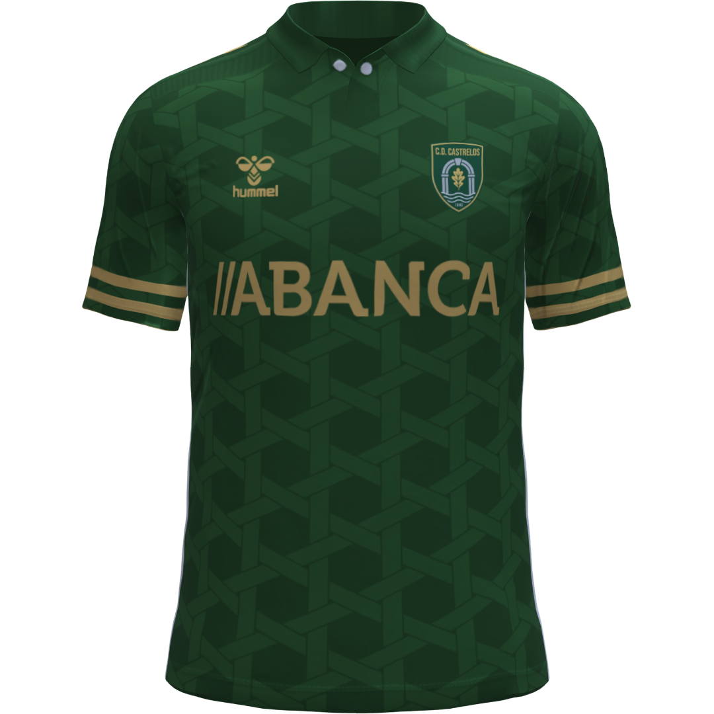
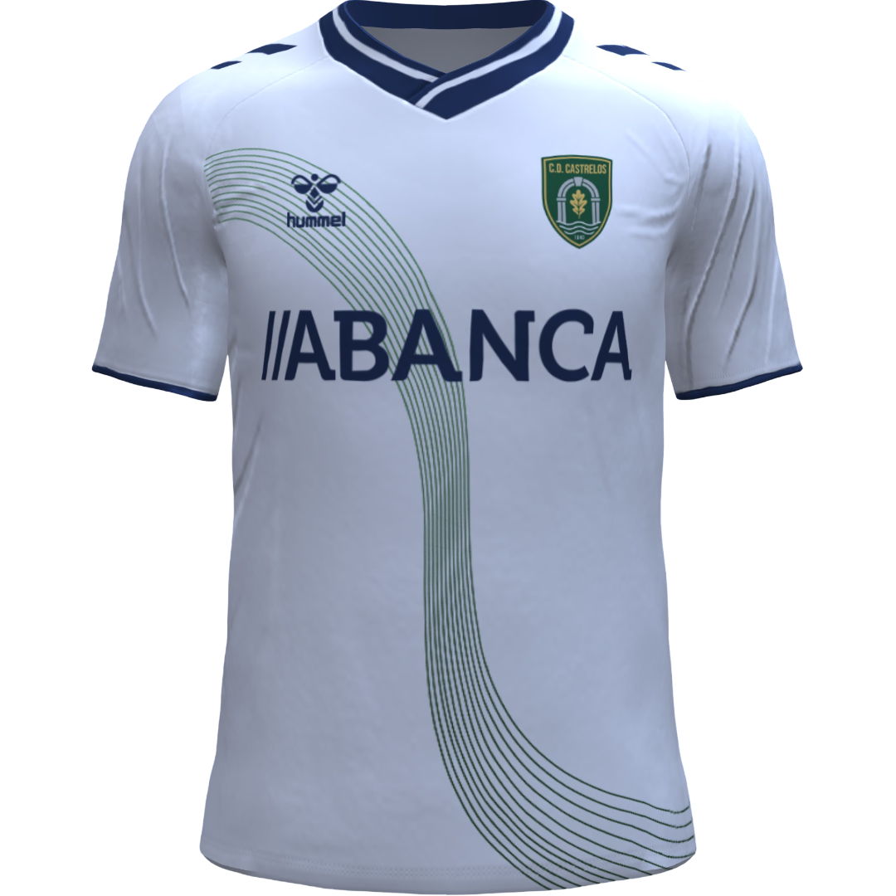
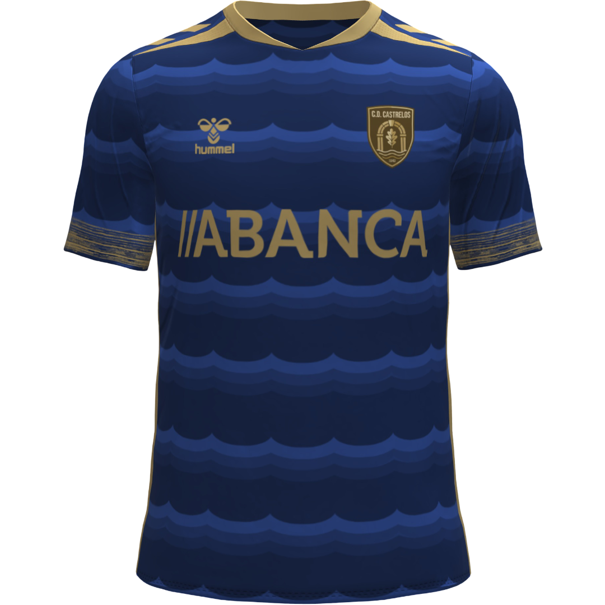

Historia y Evolución del Club
Fundado por obreros de astilleros y vecinos junto al Parque de Castrelos. Adoptaron el verde como símbolo de identidad obrera y marinera.
Ascenso a categoría nacional y construcción del Estadio Municipal de Castrelos, famoso por su ambiente inglés, el barro y la presión como local que dio pie al apodo de Los Canteros.
Época dorada con el salto a la máxima categoría de la liga y la fundación en los 90 de su grupo ultra, el Frente Cantero.
Graves apuros económicos y deportivos a finales de siglo que pusieron al club al borde de la desaparición, salvado por la movilización de sus socios.
Con la llegada de Celso Moure a la presidencia en 2012, el club se saneó, protegió su modelo de propiedad asociativo y se consolidó firmemente como un clásico de la Liga CaixaBank (con 28 temporadas históricas en Primera).
Equipaciones Oficiales

1ª Equipación (Local)
2ª Equipación (Visitante)
3ª Equipación (Alternativa)Clasificación Histórica en Primera División
| Temporadas en Primera | 28 temporadas |
| Partidos jugados | 1.026 |
| Victorias | 362 |
| Empates | 274 |
| Derrotas | 390 |
| Goles a favor (GF) | 1.245 |
| Goles en contra (GC) | 1.340 |
| Diferencia de goles (DG) | -95 |
| Puntos totales históricos | 1.360 puntos |
Plantilla Oficial de la Temporada
- 1Iago Souto
- 13Xoel Rey
- 25Adrián Paz
- 2Nuno Antúnez
- 3Hugo Varela
- 4Brais Fontán
- 5Diego Saavedra
- 12Roi Estévez
- 18Lucas Carballo
- 22Yago Maceira
- 24Martiño Freire
- 6Gael Vázquez
- 8Antón Mouriño
- 10Pablo Domínguez
- 14Samuel Penas
- 16Xabi Loureiro
- 20Mateo Silva
- 21Breogán Nogueira
- 23Unai Cambón
- 7Damián Castro
- 9Thiago Da Silva
- 11Mateo Aspas
- 15Anxo Villar
- 17Cibrán Loureiro
- 19Lucas Rivas